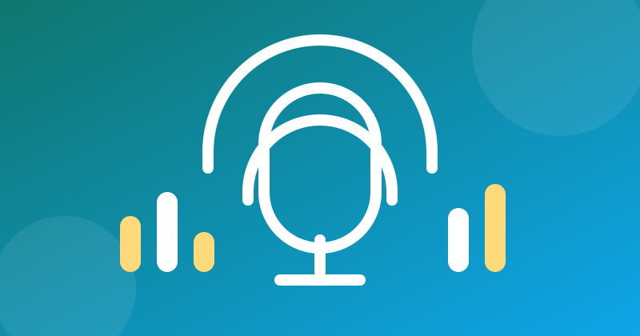

5 Best Free Podcast Apps for Android (2026)

Podcasts are free to listen to — but the app you use decides whether they are a pleasure or a chore. We tested the most popular free podcast players on a mid-range Android phone for one question: which one lets you download episodes, fall asleep to them, and pick up where you left off — without a subscription?
One note first: Google Podcasts shut down in 2024, with its listeners pointed to YouTube Music. If you are still looking for a replacement, this list is for you.
What we tested
- Offline downloads — save episodes over Wi-Fi, listen with no data
- Playback controls — speed, skip silence, sleep timer, resume position
- Discovery — finding new shows, not just playing ones you already know
- Free-tier honesty — what is actually free, and what is locked behind a paywall
1. AntennaPod — best fully free player
AntennaPod is open-source and completely free: no ads, no subscription, no account required. It downloads episodes, remembers your position, offers a sleep timer and variable speed, and lets you subscribe by RSS feed — including independent shows that never appear in big catalogues. The design is plain rather than flashy, but nothing here is held hostage. For most listeners, this is the answer.
2. Pocket Casts — best all-round experience
Pocket Casts pairs a clean, modern player with excellent discovery, smart playlists, and sync across devices. The core listening experience — search, subscribe, download, speed control, sleep timer — is free; the optional Plus subscription adds extras like cloud storage and desktop access. If you want a polished app and don't mind a paid tier existing, start here.
3. Podcast Addict — best for power listeners
Podcast Addict does more than podcasts: it also handles RSS news, YouTube channels and audiobooks in one place, with deep settings for downloads, playlists and automation. The trade-off is a busier interface and banner ads in the free version (removable with a one-time payment). If you follow dozens of feeds and like fine control, nothing else matches it.
4. Spotify — best if you already use it
Spotify's podcast catalogue is huge and its recommendations are genuinely good — but podcasts sit inside a music app, and the free tier interrupts music (not podcasts themselves) with ads. If Spotify is already on your phone, its podcast player is perfectly usable, with downloads on the free tier limited compared with paid. Don't install it just for podcasts, though: a dedicated player does the job better.
5. Castbox — best for discovery
Castbox leans hard into discovery, with curated lists, in-audio search, and community comments on episodes. Downloads, speed control and a sleep timer are all included free. The free version shows ads and pushes its premium tier, so it is less clean than AntennaPod or Pocket Casts — but if finding your next show matters more than a minimal interface, it earns its place.
Quick comparison
| App | Ads | Offline downloads | Best for |
|---|---|---|---|
| AntennaPod | None | Yes, free | Free forever, no account |
| Pocket Casts | None | Yes, free | Polished everyday listening |
| Podcast Addict | Banner (free) | Yes, free | Power users, many feeds |
| Spotify | Yes (music) | Limited on free | Already a Spotify user |
| Castbox | Yes | Yes, free | Discovering new shows |
Note: prices and free-tier features change often — always check the Play Store listing before installing. We never link to cracked or modded apps.